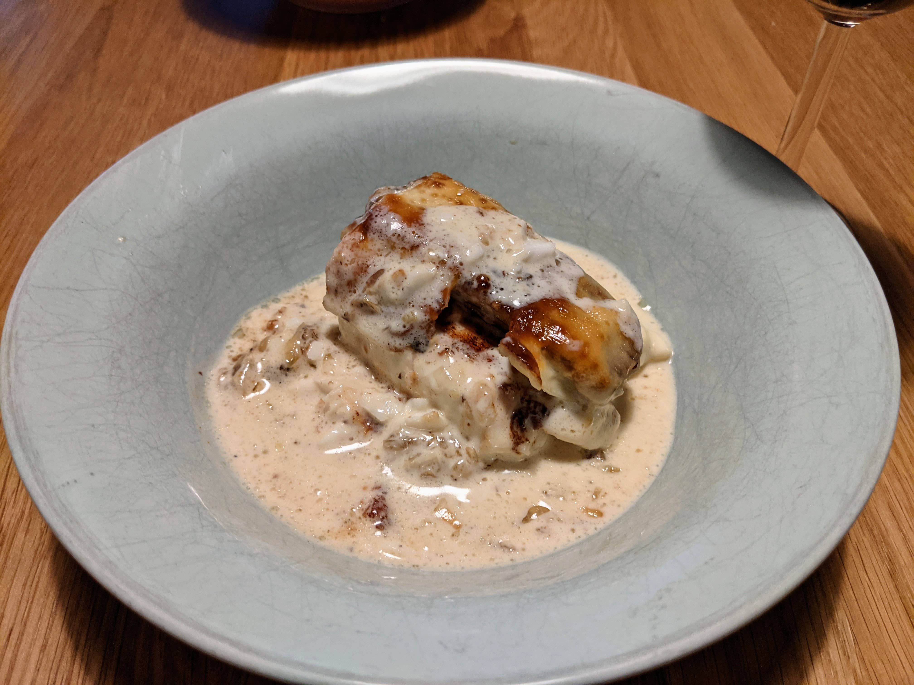

Peixe a Delicia

Ingredients
Fish:
1 kg fresh tilapia fillets
5 cloves garlic, mashed
juice of 1 lime
Sauce base:
1 onion
2 tbsp tapioca flour
2 cups cooking cream
The rest:
4 bananas, cut lengthwise
cheese, shredded
Instructions
-
Season fish with lime juice and galic.
Rest on a bowl for 15 minutes, then sear it on a large skillet and set aside.
-
Sear sliced bananas. Then set aside.
-
Sear onion until golden.
Add flour and mix well.
Add cooking cream and mix, heating to incorporate.
-
Layer up ingredients on a large baking dish.
First 2/3 of sauce at the bottom, then
fish,
banana,
1/3 of sauce,
and finally cheese at the top
-
Roast on the oven at 400F for 15 minutes.